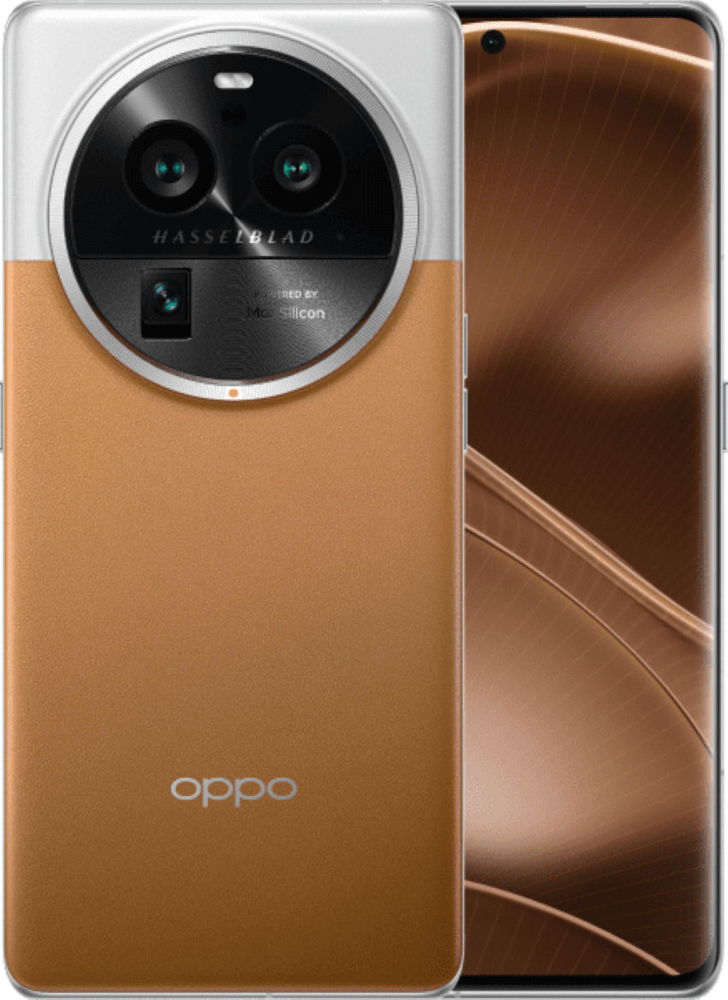

Oppo
Oppo to chińska firma technologiczna, która została założona w 2004 roku jako submarka BBK Electronics. Oppo specjalizuje się w produkcji smartfonów, akcesoriów i innych urządzeń elektronicznych, które oferują wysoką jakość i niską cenę

Find X6 Pro
Flagowym modelem telefonu Oppo jest Oppo Find X6 Pro, który został zaprezentowany w marcu 2023 roku. Oppo Find X5 Pro to smartfon z najwyższej półki, który ma 6,7-calowy ekran Super Retina XDR z technologią Dynamic Island, procesor Snapdragon 8 Gen 1, 12 GB pamięci RAM i do 1 TB pamięci wewnętrznej. Oppo Find X5 Pro ma też cztery aparaty tylnie z głównym sensorem 50 MP i zoomem optycznym 10x, a także aparat przedni 32 MP